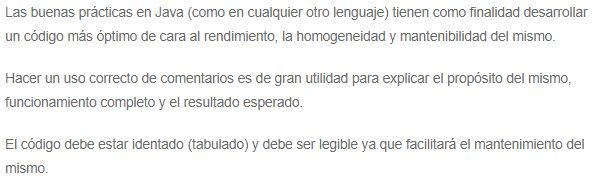

-
FreeMind es un software que permite la elaboración de mapas mentales o de conceptos, programada en Java. Se publica bajo licencia GNU o General Public License. Esta disponible parat Windows, Linux y Mac OS X vía Java Runtime Environment.345
FreeMind es útil en el análisis y recopilación de información o ideas generadas en grupos de trabajo, pues con él es posible generar mapas mentales y publicarlos en internet como páginas html, java, etc.
FreeMind permite al usuario editar un conjunto de ideas jerárquizadas alrededor de un concepto central. El enfoque no lineal ayuda al brainstorming, a medida que las ideas se van añadiendo al mapa mental. Como aplicación Java que es, FreeMind es portable a través de múltiples plataformas y retiene la misma interfaz de usuario, con solo una cierta variación de la interfaz común en cada sistema operativo.
- 